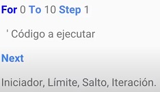

Un bucle o ciclo, es una sentencia que ejecuta repetidas veces un trozo de código, hasta que la condición asignada a dicho bucle deja de cumplirse.
Bucle For: Es un bucle que repite el bloque de instrucciones un numero predeterminado de veces.
Explicación:

For dice donde empezamos la variable, To nos dice dónde termina y Step es la cantidad que se le sumara al primer valor.
La configuración de compilado será la siguiente:
continuando con la explicación, dijimos que cuando escribíamos For era el inicio To el límite y Step el salto que dará, esto es para evitar el tener que escribir muchos "log" que son las líneas que nos llevaran el contador, podemos escribir "log (del 1 al 100)" pero esto está mal, ya que perdemos mucho tiempo entonces para esto nos servirá el For, que nos dará lo mismo por menos esfuerzo como aquí:
como se ve escribimos que For comenzará en el valor 1 to hasta el 100 Step pero dará pasos de 1 en 1 así como se muestra a la derecha que son los números del 1 al 100.
Explicación simple: Míralo como si fuera una suma hasta el numero 100 es decir 1+1 es igual a 2, 2+1 es igual a 3 y así hasta llegar al número 100.
pero ¿qué pasa cuando cambiamos el numero?
Mira como cambie el salto (Step) de 1 a 5, los numero de la derecha ya no son de 1 en 1, son de 5 en 5, pero aquí hay un detalle que debes tener en cuenta a la hora de hacer esto ya que si vez bien el valor inicial(for) comienza en 1 y el objetivo(to) es 100 por lo cual decimos que 1+5 es igual a 6, 6+5 es igual a 11 pero si hacemos cuentas esto no llegara a 100 ya que llegara el punto en el que sea el valor 96+5 y esto es una contra a la meta que pusimos porque 96+5 es 101 y nos estaríamos pasando del límite que programamos, para solucionar esto basta tan solo de cambiar el valor de 1 a 0 si solo eso, ya que ahora será el valor 0+5 es 5, 5+5 es igual a 10 y así sucesivamente hasta el 100
Ejemplo:
Aquí cosas para las que podemos usar el bucle for:
En el ejemplo vemos que en la derecha mostramos las tablas del 5 y contamos del cliente 1 al 5, pero, ¿cómo funciona eso?
Explicación de lo que hacemos en la primera parte:
En la parte de log vemos que esta (" 5 x " &Valor &" = " &(5 * Valor)) pues bueno las partes se dividen por el signo ampersand (&) lo que en lenguaje de programación significa que esto será una separación, es decir:
"5 x " es una parte (esto es como si fuera texto y se acomoda en la parte derecha como 5x)
&valor es otra (esto nos indica que pondremos el numero en que hemos contado es decir las veces que hemos saltado en step)
&" = " otra (esto es texto = que solo se verá igual en el lado derecho)
&(5 * valor) (aquí es donde las cosas cambian ya que para que el B4A no detecte esto como texto debemos encerrarlo entre paréntesis, así el programa identificara que es una operación lo que significa que 5 se multiplicara por el valor que llevamos)
For numero = 1 To 5 Step 1
En la parte de cliente sucede algo similar pero más simple:
Aquí solo decimos que log("Clientes:" &Numero) es decir agregaremos la palabra clientes + el numero en el salto que vayamos, así como se muestra en la derecha.